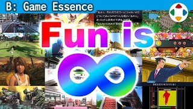
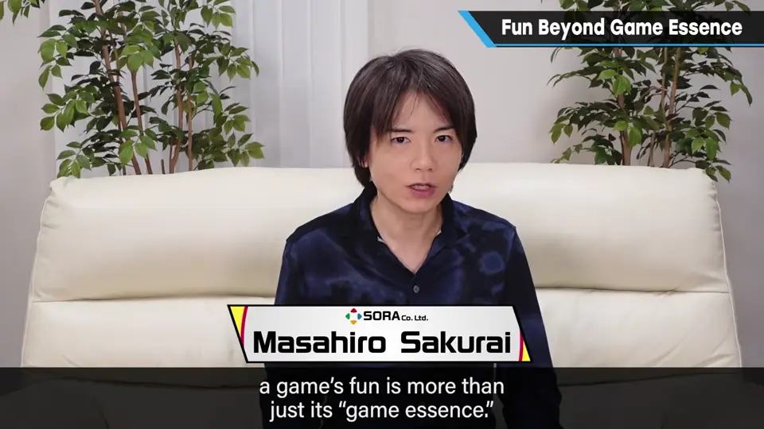
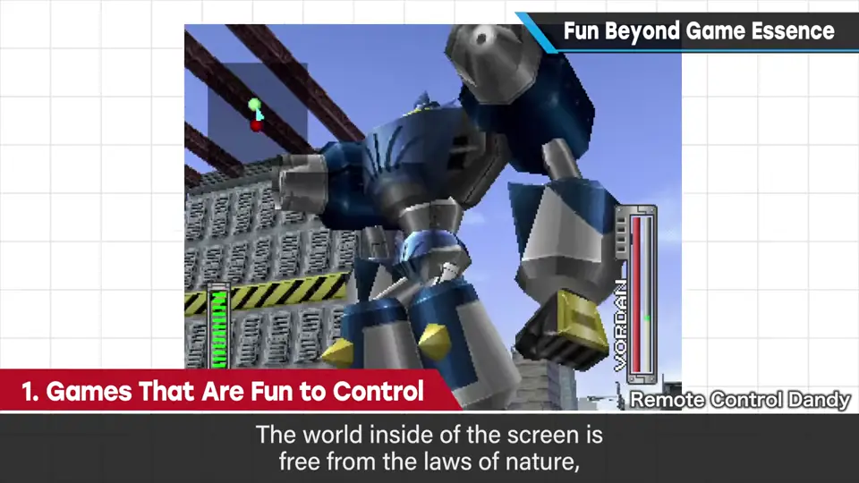
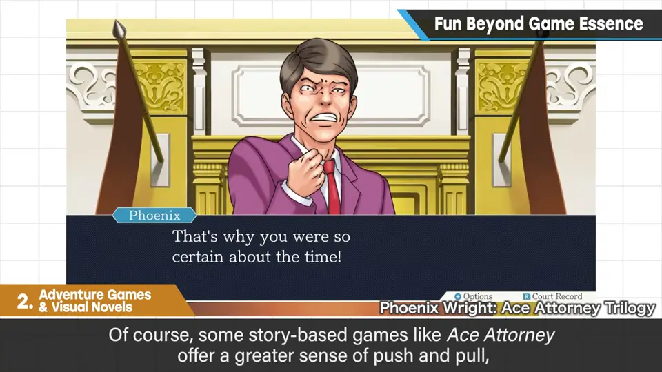
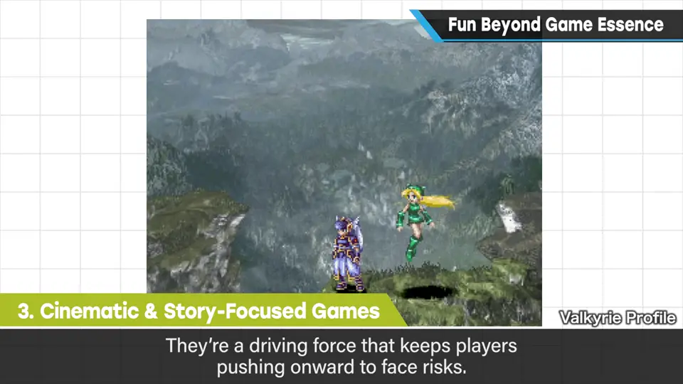
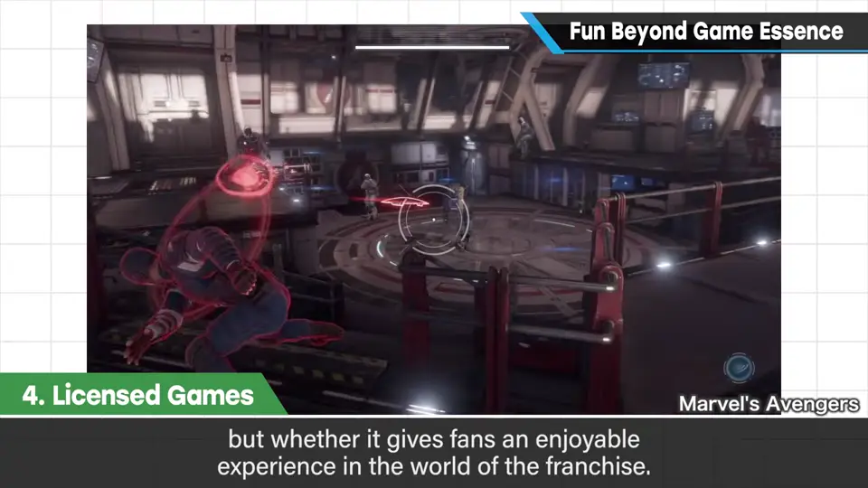
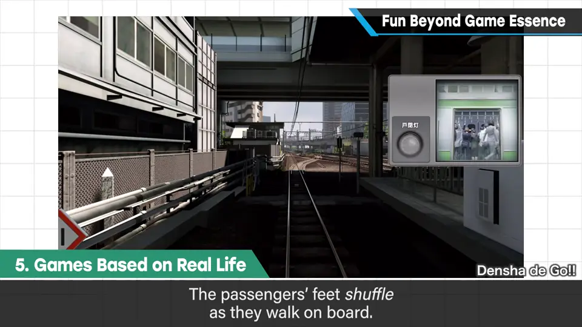
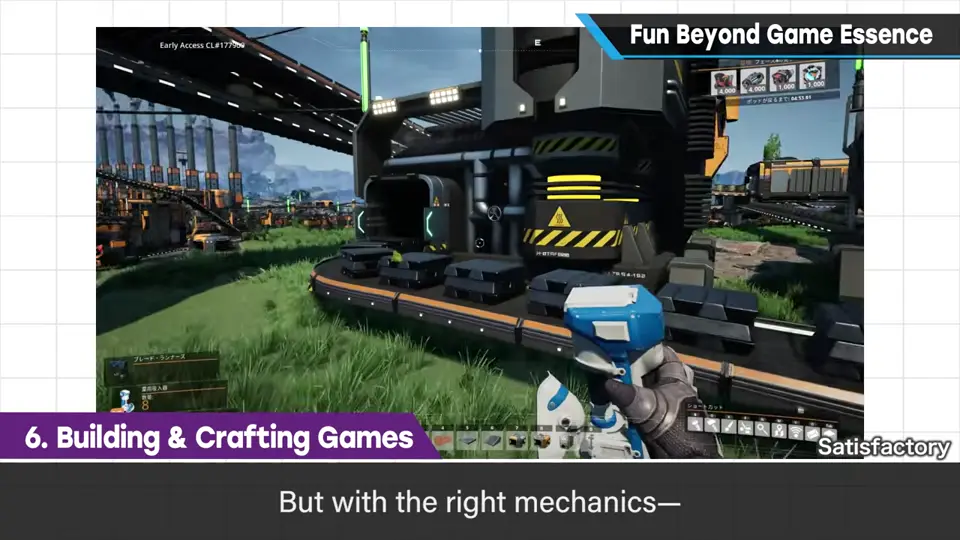
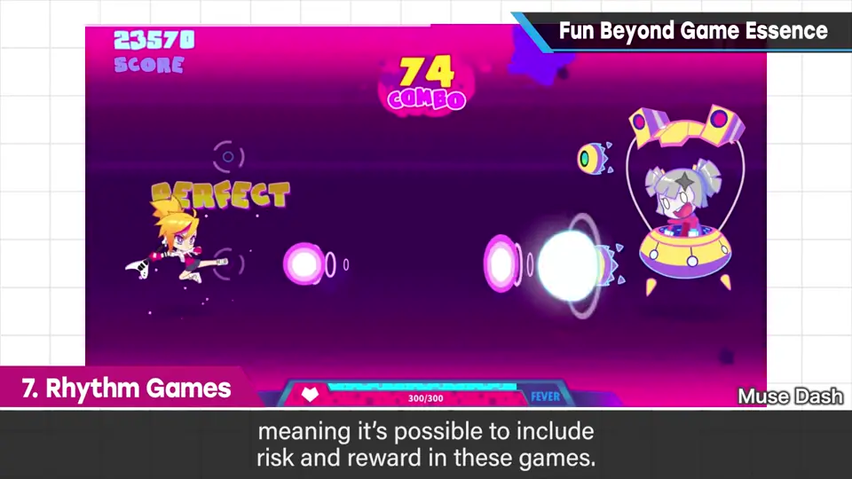
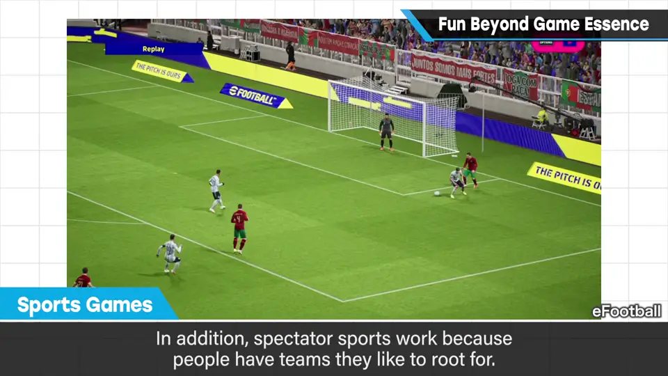

速览
樱井想早点说明：游戏的乐趣 ≠ 游戏性，游戏性只是乐趣的一部分。他列出 7 类不依靠游戏性的乐趣：① 操作本身好玩——屏幕里是摆脱自然法则的空间，需要合适的规格和敏锐调整手感的技术（遥控车也是靠手感取胜）；② 冒险游戏/音响小说——推进故事的乐趣优先，但光故事好不够，要用计算机的系统和相应的剧本；《逆转裁判》这类则博弈色彩较浓；③ 影像/故事重视——可以加在任何类型上，本身不是游戏性，但「想往前看」的欲望会成为面对风险的动力，也提高体感；④ 版权/角色作品——像电影周边、玩具、卡牌一样面向粉丝，能否让人享受作品世界更重要，只谈游戏性是不解风情；⑤ 真实题材再现（非策略的真实模拟）——如电车游戏里开门、乘客脚步的音效，让玩家感受到屏幕外的世界；⑥ 建造/工艺——只是做东西就好玩，加入风险回报会更有趣；⑦ 音游——跟着节奏发声是更原始的喜悦，也可以加入风险回报（判定越宽松越无聊）。体育类本身就自带博弈，这次没列入。结论：游戏性不是乐趣的全部，各种乐趣并非 0 或 1，而是模糊相连；敏锐地感受并拆解乐趣，能做的范围更广。
1. 游戏的乐趣 ≠ 游戏性 0:04
游戏性只是游戏乐趣的一部分，游戏是多样的。下面列出 7 类不靠游戏性来提供乐趣的游戏类型。

2. 7 类游戏性之外的乐趣 0:22
| # | 类型 | 樱井的说法 |
|---|---|---|
| 1 | 操作好玩的游戏 | 屏幕里是从自然法则中解放的空间；要靠合适的规格、敏锐调整操作感的技术（遥控车也是靠操作感） |
| 2 | 冒险游戏/音响小说 | 推进故事的乐趣优先于博弈；但光故事好不够，要用计算机的表现与系统、相应的剧本；《逆转裁判》这类博弈性更强，界限模糊 |
| 3 | 影像/故事重视 | 可附加于任何类型；本身不是游戏性，但「想继续看」的欲望是面对风险的动力，也能提高对画面的代入感 |
| 4 | 版权/角色作品 | 当作面向粉丝的商品群（如电影、玩具、卡牌）；能否让人享受作品世界更重要，粉丝以外的人评论意义不大，只谈游戏性是不解风情 |
| 5 | 真实题材再现 | 非策略类的真实模拟：在虚拟世界里玩「过家家」，例如电车进站时开门声、乘客脚步声，让人感受到屏幕外的世界 |
| 6 | 建造/工艺 | 只是制作就好玩；加入「从高处摔落会死」「为防御敌人而建造」「为素材冒险」等风险回报，可能飞跃性地有趣 |
| 7 | 音游 | 跟着节奏发声是比游戏性更原始的喜悦；越熟悉的曲子越好玩；也可加入风险回报 |






3. 音游里的风险与回报 4:45
音游也可以产生博弈、加入风险回报，例如 beatmania 系列：偏离最佳的 PERFECT 时机一点点就算失败。如果做成离 PERFECT 越远、越慢慢变成 BAD 的「柔软」系统，博弈减少，反而会显得有点无聊。

4. 体育类，以及模糊的边界 5:30
樱井考虑过但最终没列入的是体育：真实的体育本身就一定有博弈，搬到计算机上时就已具备某种游戏性。而且观赛之所以成立是因为有支持的球队——若现实中有你支持的球队、你又在操作它，就更能一喜一忧。这类作品重新设计游戏性的必要性较低（但不是没有）。

自测题
1. 为什么樱井说「游戏的乐趣 ≠ 游戏性」？
游戏性只是乐趣的一部分；有很多游戏类型主要靠游戏性以外的乐趣（操作、故事、版权世界、真实再现、建造、音游等）。 0:04
2. 影像/故事本身不是游戏性，它对游戏性有什么帮助？
「想继续往下看」的欲望会成为更努力面对风险的动力；充分展示角色和世界也能加深玩家的想象、提高对画面的代入感。 1:35
3. 为什么在音游里把判定做得「柔软」反而会无聊？
若离 PERFECT 越远就越平滑地变成 BAD，博弈（风险回报）就会降低，显得有些无聊；像 beatmania 那样稍晚就失败，才有博弈。 5:04